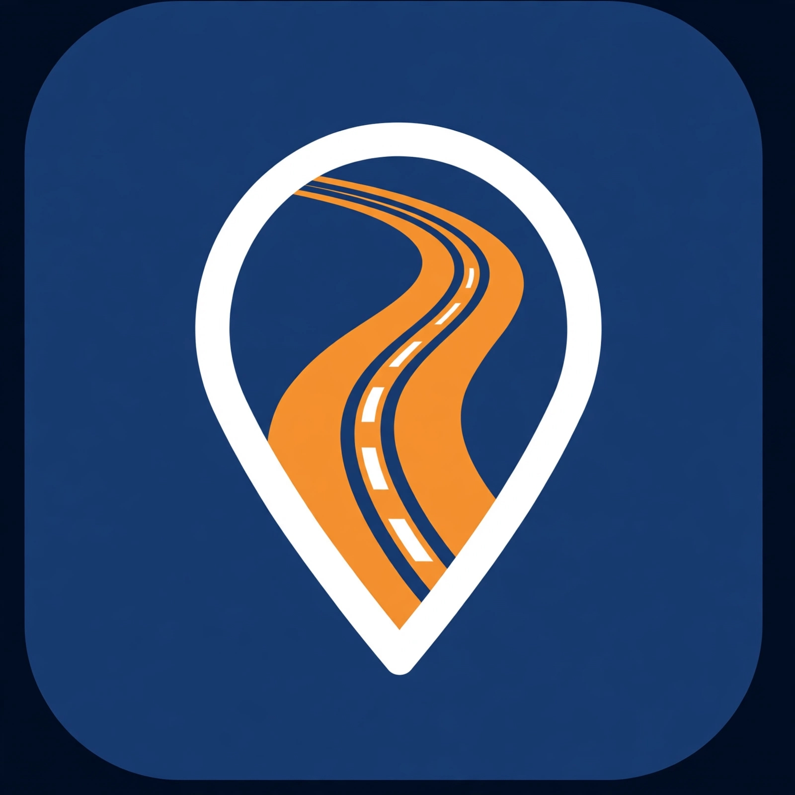

ROTA · Cadastro de motorista
Mostre a sua rota com confiança.
Não usamos fotografias. Os dados necessários são escritos e protegidos no sistema.

ROTASó rota e segurança.Não usamos fotografias. Os dados necessários são escritos e protegidos no sistema.